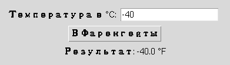

Глава 16 · Создаём классные приложения с Tkinter
Мини-проект: конвертер температур
Простая форма — но по образцовой архитектуре: чистая функция преобразования отдельно от интерфейса.
Форма «ввод → проверка → чистая функция → результат» на практике: конвертер температур.
konverter_temperatur.py
def celsius_v_farengejty(celsius):
return celsius * 9 / 5 + 32
def farengejty_v_celsius(farengejty):
return (farengejty - 32) * 5 / 9
print(round(celsius_v_farengejty(100), 1)) # 212.0
print(round(celsius_v_farengejty(-40), 1)) # -40.0
print(round(celsius_v_farengejty(0), 1)) # 32.0Температура не обязана быть положительной
0°C, −5°C, −40°C — всё это совершенно нормальные температуры. Конвертер температур не должен переиспользовать
validate_positive_amount (раздел 16.23) — она отвергла бы отрицательный и нулевой ввод как «ошибку». Здесь нужна просто общая проверка «это число?» — parse_number.konverter_gui.py
import tkinter as tk
from tkinter import ttk
def celsius_v_farengejty(celsius):
return celsius * 9 / 5 + 32
def parse_number(text):
text = text.strip()
if not text:
return False, None, "Поле не должно быть пустым"
try:
return True, float(text), ""
except ValueError:
return False, None, "Введите число"
root = tk.Tk()
celsius_var = tk.StringVar()
result_var = tk.StringVar()
def on_convert():
ok, value, message = parse_number(celsius_var.get())
if not ok:
result_var.set(message)
return
farengejty = celsius_v_farengejty(value)
result_var.set(f"{farengejty:.1f} °F")
ttk.Entry(root, textvariable=celsius_var).pack()
ttk.Button(root, text="В Фаренгейты", command=on_convert).pack()
ttk.Label(root, textvariable=result_var).pack()
parse_number уже знаком
Функция
parse_number — та же самая, что мы написали в разделе 16.23. Один раз написанная и проверенная функция разбора числа пригождается в нескольких проектах — здесь без дополнительного требования «положительное».★★ Самостоятельная задача
Оба направления
Добавьте второе поле и кнопку «В Цельсии», использующую farengejty_v_celsius — по образцу существующей кнопки.
Практика: конвертер температур
Проверяется без tkinter — на чистых функциях преобразования, включая отрицательные значения